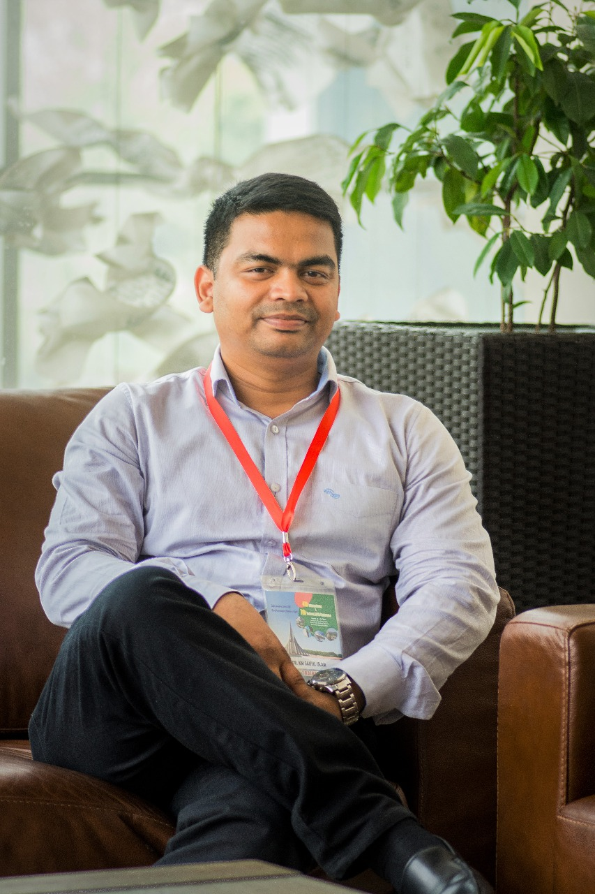

Paediatric Surgeon · Assistant Professor, Department of Paediatric Surgery, Bangladesh Medical University. Dedicated to delivering compassionate, evidence-based surgical care for children through advanced techniques, academic excellence, and years of clinical experience.

Dr. Shaiful Islam is a dedicated and skilled Paediatric Surgeon with extensive experience in clinical practice, surgical procedures, and academic medicine. He currently serves as an Assistant Professor at Bangladesh Medical University, where he is recognised for his commitment to patient care, medical education, and continuous professional development.
He holds advanced training in neonatal surgery, minimally invasive surgery, paediatric urology, hepatobiliary surgery, and paediatric surgical oncology — bringing together academic leadership, surgical excellence, and a lifelong dedication to community healthcare.
Bangladesh Medical University (BMU) · Shahbag, Dhaka, Bangladesh
From routine general paediatric procedures to complex neonatal and oncological surgery, every case is approached with precision and compassion.
Everyday paediatric surgical conditions seen in clinic — from hernias to minor skin and soft-tissue lumps.
Explore procedures →Specialist surgical care for structural conditions identified in newborn babies.
Explore procedures →Keyhole surgical techniques used across a wide range of paediatric conditions.
Explore procedures →Surgical care for the kidneys, bladder, and genitalia in infants and children.
Explore procedures →Surgical management of liver, bile duct, and gallbladder conditions in children.
Explore procedures →Multidisciplinary surgical care for solid tumours of childhood.
Explore procedures →Dr. Islam explained every step of our son's surgery with such patience. We felt reassured from the very first consultation.
The care our daughter received was compassionate and professional throughout. Recovery was smooth and well guided.
A truly skilled surgeon who takes the time to answer every question. We are grateful for his expertise.
Available across multiple chambers in Dhaka and Khulna. Schedule an appointment with Dr. Shaiful Islam for expert paediatric surgical consultation.